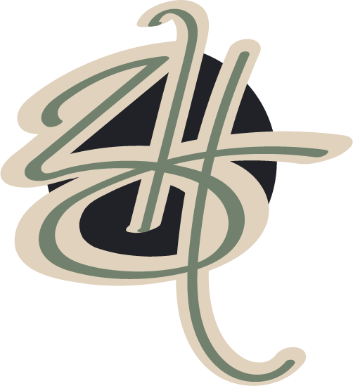

Hi!
My name is Bronwyn Howell (she/her)
I am a web developer and video producer from Calgary, Alberta, Canada, and recent graduate of New Media Production and Design (NMPD) at the Southern Alberta Institute of Technoloy (SAIT).
My strengths lie in UI/UX design, front-end and back-end web development, and video editing and animation. Here you will find examples of the recent web and video projects I have done during my time at SAIT as well as work I have done for various clients, including the Calgary Fire Department.
Before joining the NMPD program, I had limited experience creating digital media of any kind. In my short time at SAIT, I have grown my skills in order to create the pieces you see before you, and I strive to see constant, rapid improvements as I continue to learn and practice. This very website was built from scratch by myself and serves as a testament to my knowledge and skill in web design and development.
If you like what you see and want to work together, you can fill out the form below, or email me directly at bronwyn@pocketbat.ca
Work Experience
Assistant Video Design Specialist
Calgary Fire Department
May 9th, 2022 - August 31st, 2022
- Assisting with studio and location-based production.
- Supporting deployment, operation and maintenance of camera, audio, lighting and live-streaming equipment.
- Archiving, ingesting, and synchronizing multi-camera video files.
- Post-production editing in Adobe Premiere Pro.
- Non-linear project setup and assembly of edits for review.
- Providing technical services for virtual community education.
- Collaborating with clients to bring their visions to life.
This was a four-month contract completed with the Calgary Fire Department. During my time in this position, under the tutelage of Karl Leung, I learned how to operate various broadcast-standard cameras including Sony Z90 and Sony FS7, how to archive and manage digital footage, and how to compile and edit clips for review using Adobe Premiere Pro.
I was responsible for managing weekly broadcasts for internal communication within Calgary Fire, filming and editing highlights videos for notable events including Camp Courage Calgary 2022, and travelling to various fire stations to record interviews with their respective crews and the fire chief for internal distribution.
A selection of these videos are available for viewing in my portfolio.
Website Manager
Delcaro Media
February 14th, 2023 - April 28th, 2023
- Building websites using CMS services such as Wix and WordPress.
- Using Bing Webmaster to perform SEO scans on client websites and correcting any errors and warnings that arise.
- Restructuring client websites for better SEO to help their sites appear higher in search engine queries.
- Creating mock-ups for site redesigns to present to the client with the goal of improving user experience.
- Migrating client websites between hosting services.
During my time in NMPD, I completed my practicum with Jon Delcaro who runs Delcaro Media out of Kitchener, BC. Jon taught me a lot about Search Engine Optimization (SEO) including how to use Bing Webmaster and Google Analytics to perform scans on one's hosted sites to check for any warnings or errors that may prevent or discourage search engines from indexing them.
I was responsible for performing scans on over 20 websites and editing them in their respective back-ends to correct any of these errors. I also used Wix to reconstruct one client's website which was originally built in WordPress. Additionally, I used Figma to create a website mock-up to conceptualize a merged website incorporating two of a client's websites into one cohesive piece.
Contact Me
If you like what you see and want to work together, you can fill out this form or email me directly at bronwyn@pocketbat.ca